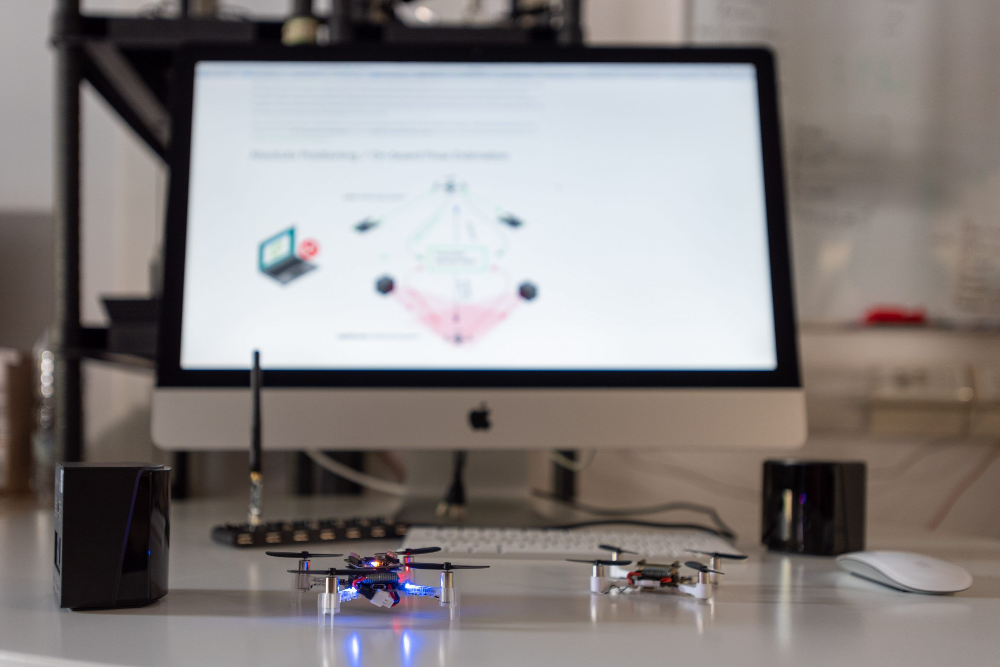

Internship.

In July 2023, I started an internship at ITConsulting,
working in a team on a project and preparing for the ISTQB Certified Tester Foundation Level certification.
Software Tester Career
Since February 2024, I have been working as a consultant at MSC Crociere as a Manual Software Tester, collaborating in a team on the B2C project.
I am responsible for planning, executing, and documenting test cases, as well as performing compatibility and performance testing.
I collaborate with the development team to identify and resolve software bugs.
I also perform functional and regression testing to ensure the quality of the final product.
I create reports and dashboards to monitor project progress.
I develop and execute functional, regression, and performance test plans.
The tools used include Jira, XRay, and Elastic.